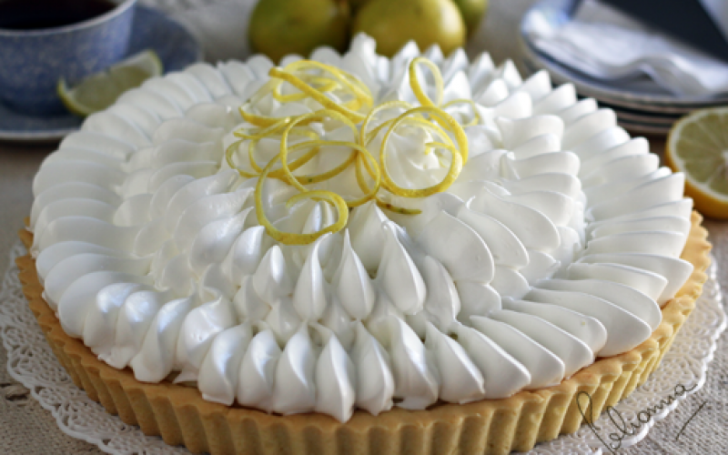

Pie de Limón
Ingredientes
- 1 1/2 tazas de galletas molidas
- 1/2 taza de mantequilla derretida
- 1 lata de leche condensada
- 1/2 taza de jugo de limón
- 3 yemas de huevo
- 1 taza de crema batida
- Rodajas de limón para decorar
Preparación
- En un procesador de alimentos, tritura las galletas María hasta obtener una consistencia de migas finas.
- En un tazón, mezcla las galletas trituradas con la mantequilla derretida hasta formar una masa compacta.
- Presiona la masa de galletas en el fondo de un molde para tarta y refrigera durante 30 minutos.
- En otro tazón, bate las yemas de huevo hasta que estén bien mezcladas.
- Agrega la leche condensada, el jugo de limón y la ralladura de limón a las yemas de huevo y mezcla hasta obtener una mezcla homogénea.
- En un recipiente aparte, bate las claras de huevo a punto de nieve.
- Agrega el azúcar a las claras de huevo y continúa batiendo hasta obtener un merengue firme.
- Incorpora suavemente el merengue a la mezcla de limón, realizando movimientos envolventes para no perder el aire.
- Vierte la mezcla sobre la base de galleta en el molde.
- Refrigera el pie de limón durante al menos 4 horas, o hasta que esté firme.
- Sirve frío y disfruta.